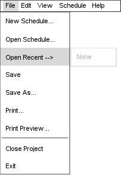

Figure 103: Open Recent menu
When the user selects File-->Open Recent, the Schedule Tool opens a side-menu displaying up to the last 5 schedule projects successfully opened by the user. If less then 5 schedules have been opened, the window will shrink to accomodate what entries it can. Below, Figure 103 illustrates this menu. It is assumed that the user has previously created and saved two other schedules named "Winter_2010" and "Spring_2010".
If no schedules have yet been opened, the Open Recent menu will display a single, greyed out entry "None", as illustrated in Figure 104.

Figure 104: Open Recent w/ no schedules
Upon selection of a file in the Open Recent dialog, the Scheduler Tool will go about the operations necessary to open the file. For details regarding the process of opening a file, please refer to Section 2.8.2. Each entry appears as its root filename, less any leading file path and less any filename extension. Thus, a schedule stored in "/home/admin/scheduler/MyBestSchedule.stf" would appear in the Open Recent menu as "MyBestSchedule".
prev: open | next: save | up: file commands | index: index